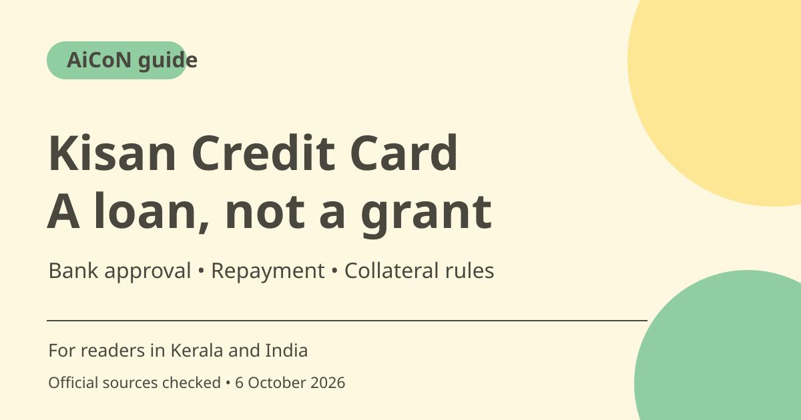

Kisan Credit Card: farm loan eligibility and collateral limits
Kisan Credit Card provides bank credit for eligible farming and allied activities. It must be repaid. RBI raised the collateral-free agricultural loan limit to ₹2 lakh per borrower, but that is not automatic approval or permission to ignore the bank's credit, primary-security and repayment conditions.

What is KCC?
KCC is a bank-credit facility for agriculture and allied work. The official PM-Kisan site links a KCC application form, but PM-Kisan income support and a KCC loan are different. Completing an income-support registration does not automatically create a loan, and a downloaded application is not sanction of the amount you request.
Eligibility and bank-specific rules
RBI's checked 2026 small-finance-bank directions include owner-cultivators, tenant farmers, oral lessees, sharecroppers and eligible SHG/JLG borrowers. They also describe allied activities such as animal husbandry and fisheries. These directions have a specific bank scope. Ask your own bank for the applicable KCC rules and accepted evidence rather than treating one document as identical policy for all lenders.
₹2 lakh collateral-free limit
RBI's December 2024 circular raised collateral-free agricultural loans including allied activities to ₹2 lakh per borrower, effective no later than January 1, 2025. The checked 2026 small-finance-bank directions distinguish secondary collateral from primary security or financed assets. Collateral-free does not mean no documents, no scrutiny, no repayment or a guaranteed ₹2 lakh sanction.
Prepare evidence for your circumstances
Gather identity and relevant farming, land/tenancy, crop and existing-credit details requested by the bank. Tenant and sharecropper situations can need different proof from ownership. Do not invent land records or assume every borrower can use the same checklist. For a Kerala applicant, your bank or recognised local service route can explain documents accepted for your actual cultivation.
Interest and subsidy need current confirmation
The directions refer to applicable interest-rate, subvention and prompt-repayment rules rather than one universal rate for all borrowing. Get the sanction terms, sub-limits, repayment dates and any subsidy conditions in writing. Missing a due date can affect costs or benefits. A social-media promise of very cheap credit is not the final loan contract.
Protect your application
Use the official form or your bank's maintained application route and retain a receipt. Do not pay an unverified agent to guarantee approval or share banking OTPs, PINs or passwords. Ask the bank to explain fees, security and how repayments work before accepting a loan. Keep original documents safe and provide only what the verified process requires.
How to use it, step by step
- Ask your bank whether your cultivation or allied activity qualifies under its current KCC rules.
- Open the official PM-Kisan site for the linked KCC form, or obtain the current application directly from the bank.
- Prepare the identity, land/tenancy, crop/activity and existing-credit details the bank requests for your circumstances.
- Complete and review the application without inventing ownership or income details, then submit through the verified bank/service route.
- Keep the acknowledgement and respond to legitimate document requests through trusted channels.
- Before accepting, read the sanctioned amount, rate, fees, repayment dates, security and subsidy conditions.
- Repay under the agreed schedule and check renewal/review requirements with the bank. Do not treat the facility as free money.
Cost, eligibility and limits
| Loan nature | Repayable bank credit, not a grant or automatic PM-Kisan benefit. |
|---|---|
| Collateral limit | RBI circular raises agricultural/allied collateral-free limit to ₹2 lakh per borrower. Approval and primary-security distinctions still apply. |
| Bank scope | Checked 2026 detailed directions are for small finance banks; verify your lender's applicable rules. |
| Rates and fees | Get current bank sanction terms and subsidy/repayment conditions. No universal interest promise. |
Frequently asked questions
Is KCC a government cash grant?
No. It is a loan facility with repayment obligations.
Does ₹2 lakh collateral-free mean automatic approval?
No. The bank still assesses eligibility, documents and credit terms.
Is there one rate for all borrowers?
Do not assume so. Confirm your bank's current sanction and subsidy conditions.
Official sources
- Official PM-Kisan and KCC form route
- RBI collateral-free agriculture circular
- RBI 2026 small-finance-bank KCC directions
Checked 6 October 2026. Features and prices can change. This is a guide, not a personal product test.